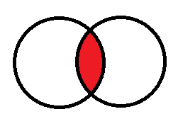
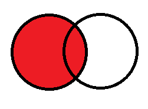
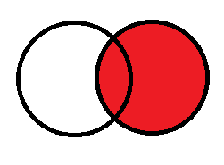
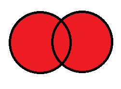

Suositeltavaa on käyttää kirjaimia a-Z. Voit käyttää myös alaviivaa (_) sekä numeroita. Ääkkösien ja välilyöntien käyttämistä kannattaa välttää.
Pää- ja vierasavainten nimissä on suositeltavaa käyttää ID-liitettä. Yksi tapa on nimetä pääavaimet id-alkuliitteellä ja vierasavaimet ID-loppuliitteellä.
Esimerkki:
| Kenttä | Kuvaus |
|---|---|
| idAsiakas | pääavain |
| nimi | kenttä |
| osoite | kenttä |
| TyyppiID | vierasavain |
| Kenttä | Kuvaus |
|---|---|
| idTyyppi | pääavain |
| nimi | kenttä |
CREATE TABLE Asiakas ( )
| NOT NULL | Kenttä ei voi olla tyhjä (NULL) |
|---|---|
| UNIQUE | Jokaisen tämän kentän arvon tulee olla yksilöllinen |
| PRIMARY KEY | Kenttä on taulun pääavain |
| Tietotyyppi | Kuvaus |
|---|---|
| int | Kokonaisluku |
| varchar (20) | Merkkijono, suluissa pituus |
SELECT sarake, sarake FROM taulu SELECT * FROM taulu
Esimerkki:
SELECT nimi, osoite FROM asiakkaat
WHERE-komennolla rajoitetaan SELECT-lauseen tuloksia.
SELECT sarake, sarake FROM taulu WHERE sarake operaattori arvo
| Operaattori | Kuvaus |
|---|---|
| = | Yhtäsuuri |
| <> | Eri suuri |
| > | Suurempi kuin |
| < | Pienempi kuin |
| >= | Suurempi tai yhtä suuri kuin |
| <= | Pienempi tai yhtä suuri kuin |
| BETWEEN | välillä |
| LIKE | tekstihaussa |
| IN | haettaessa useista eri sarakkeista |
Operaattoreita voidaan yhdistää AND ja OR -operaattoreilla.
Esimerkki:
SELECT nimi, osoite FROM asiakkaat WHERE nimi='Maula' SELECT nimi, ika FROM asiakkaat WHERE ika > 18 SELECT * FROM asikkaat WHERE nimi LIKE 'Mau%'
Haun järjestäminen tapahtuu ORDER BY -käskyn avulla.
SELECT sarake1, sarake2 FROM taulu ORDER BY sarake1 ASC/DESC, sarake2 ASC/DESC
Tietojen lisääminen tapahtuu INSERT INTO-lauseella.
INSERT INTO taulu VALUES (arvo1, arvo2, arvo3)
Esimerkki
INSERT INTO asiakkaat VALUES ('testi', 'testi', 20)
INSERT INTO asiakkaat (idAsiakkaat, nimi, osoite, ika) VALUES (5, 'testi', 'testi', 20)
Tiedon päivittäminen tapahtuu UPDATE-komennon avulla. Huom: muista WHERE-rajoitus tai kaikki taulun tietueet päivittyvät!
UPDATE taulu SET sarake1=arvo1, sarake2=arvo2 WHERE sarake=syote;
Esimerkki
UPDATE asiakkaat SET nimi='testi2', osoite='testi3' WHERE nimi='tyhjä';
Tietojen poistminen tapahtuu DELETE-komennon avulla. Muista WHERE-ehto tai kaikki taulun tiedot poistetaan.
DELETE FROM taulu WHERE sarake=syote
Hakee tiedot joissa molempien taulujen tiedot yhteisiä.

Hakee vasemman puolen taulun tiedot ja yhteiset tiedot. Puuttuvissa tiedoissa NULL-arvot.

Hakee oikean puolen taulun tiedot ja yhteiset tiedot. Puuttuvissa tiedoissa NULL-arvot.

